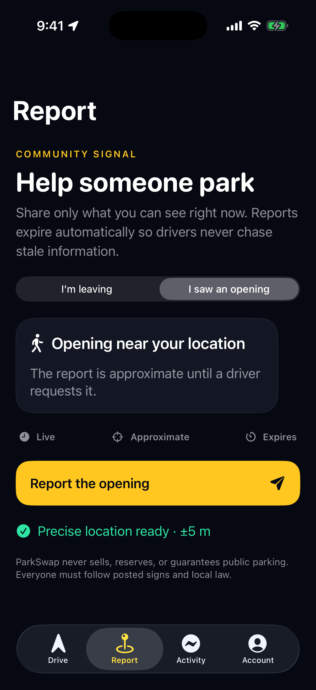

Drive with confidence
Traffic-aware routing, spoken maneuvers, adaptive map framing, live ETA, and automatic rerouting keep the drive understandable.
Search any U.S. destination, follow traffic-aware live guidance, and let ParkSwap surface timely street-parking signals before you arrive—then remember exactly where you parked.


Confirm where you are going once. ParkSwap carries that destination through the drive, street-parking search, saved-car location, and final walk.
After Start drive, ParkSwap switches to full-screen moving guidance. Your position stays visible, the map follows your heading, traffic and route changes remain clear, and the next turn stays unmistakable while parking prepares quietly in the background.
Shown: ParkSwap approach mode. Full-screen moving guidance opens when Start drive is pressed.
Traditional navigation gets you to a pin. Parking marketplaces ask you to begin a separate search. ParkSwap keeps the entire arrival in one focused journey.
Traffic-aware routing, spoken maneuvers, adaptive map framing, live ETA, and automatic rerouting keep the drive understandable.
Parking signals begin near arrival and prioritize timely community information instead of making you restart the trip.
Save the parked car, set a meter reminder, and continue on foot with a clear record of where the vehicle is waiting.
No mystery and no separate parking search. The app tells you what is happening, when parking discovery begins, and what to do next.
Search an address, landmark, or destination and begin a guided driving route from your current location.
Full-screen, moving turn-by-turn guidance keeps the car, route, and next maneuver clear.
As you approach, ParkSwap checks live driver handoffs first, then timely community sightings and scheduled departures.
Route to the selected report, verify the signs, confirm parking, and follow walking guidance to the destination.
You do not need to be driving or leaving a space. A person walking past an open, legal public parking space can share it with nearby ParkSwap drivers in seconds.
Confirm it is public and not a hydrant, driveway, crosswalk, bus stop, loading zone, or restricted space.
Open Share your spot, choose I spotted an open space, and confirm the location.
The sighting stays live for 15 minutes so the information remains timely and useful.
After a driver confirms parking, they can optionally send a secure thank-you payment.
These are real ParkSwap screens. Set the destination, start full-screen guidance, and use trusted parking help as you arrive.

Use ParkSwap only when it is safe and legal to do so. A shared signal is information—not a reservation or a guarantee. Posted parking rules always control.
Complete app actions before moving your vehicle.
Always confirm signs, restrictions, and street conditions.
Availability can change before another driver arrives.
Download ParkSwap for iPhone and make street parking part of the route—not a second search after you arrive.